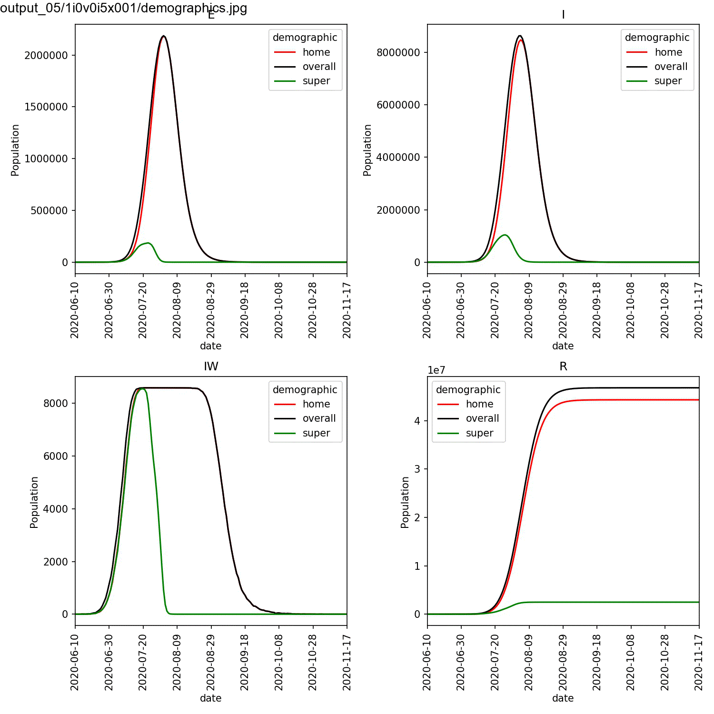

Scanning demographics¶
Now that we can model super-spreaders, it is important to be able to scan through their parameters to so that we can investigate their impact.
There are three parameters that we want to scan;
- beta[2] for
lurgy_super, which controls how infectious super-spreaders are in the asymptomatic (or pre-symptomatic) phase. - progress[2] for
lurgy_super, which controls how long the super-spreaders remain in this phase. - The percentage of super-spreaders in the normal population.
Scanning disease parameters¶
We can scan the lurgy_super parameters using a scan file (also called
a design file), as you have done previously.
The difference now is that instead of changing the disease parameter for
all demographics, we want to change it only for the super demographic.
To do this, create a design file called scan.dat and copy in the below;
super:beta[2] super:progress[2]
0.5 0.5
0.5 0.6
0.5 0.7
0.5 0.8
0.5 0.9
0.5 1.0
0.6 0.5
0.6 0.6
0.6 0.7
0.6 0.8
0.6 0.9
0.6 1.0
0.7 0.5
0.7 0.6
0.7 0.7
0.7 0.8
0.7 0.9
0.7 1.0
0.8 0.5
0.8 0.6
0.8 0.7
0.8 0.8
0.8 0.9
0.8 1.0
0.9 0.5
0.9 0.6
0.9 0.7
0.9 0.8
0.9 0.9
0.9 1.0
1.0 0.5
1.0 0.6
1.0 0.7
1.0 0.8
1.0 0.9
1.0 1.0
This scans through beta[2] from 0.5 to 1.0, while scanning progress[2]
also from 0.5 to 1.0. We specify that we are only changing these parameters
for the super demographic by prefixing beta[2] and super[2] with
super:.
Note
Adding demographic_name: before a parameter means that you will only
change that parameter for the demographic called demographic_name.
Note that the name overall is reserved, and refers to the overall
set of networks. Setting a parameter using overall: will only change
the parameter in the overall Networks object, and
not the demographic sub-networks. To change in all networks you should
not specify the demographic name.
Scanning demographic percentage¶
As of the current version of metawards it is not possible to use a
scan/design file to change the percentage of individuals in different
demographics. Instead, we need to create several demographics.json
files, and then run metawards independently for each file.
To do this, create the following four demographics files, which we
will use to scan the super-spreader percentage from 5% to 20%.
demographics_05.json
{
"demographics" : ["home", "super"],
"work_ratios" : [ 0.95, 0.05 ],
"play_ratios" : [ 0.95, 0.05 ],
"diseases" : [ null, "lurgy_super" ]
}
demographics_10.json
{
"demographics" : ["home", "super"],
"work_ratios" : [ 0.90, 0.10 ],
"play_ratios" : [ 0.90, 0.10 ],
"diseases" : [ null, "lurgy_super" ]
}
demographics_15.json
{
"demographics" : ["home", "super"],
"work_ratios" : [ 0.85, 0.15 ],
"play_ratios" : [ 0.85, 0.15 ],
"diseases" : [ null, "lurgy_super" ]
}
demographics_20.json
{
"demographics" : ["home", "super"],
"work_ratios" : [ 0.80, 0.20 ],
"play_ratios" : [ 0.80, 0.20 ],
"diseases" : [ null, "lurgy_super" ]
}
Running the models¶
We now have four demographic files to run, each of which have 36 parameter combinations to scan, which we would like to repeat 8 times. This will be 1152 individual model runs, so we need to use a cluster. Here are example slurm and PBS job submission scripts for these runs;
#!/bin/bash
#PBS -l walltime=12:00:00
#PBS -l select=4:ncpus=64:mem=64GB
# The above sets 4 nodes with 64 cores each
source $HOME/envs/metawards/bin/activate
# change into the directory from which this job was submitted
cd $PBS_O_WORKDIR
metawards -d lurgy_home -D demographics_05.json -a ExtraSeedsLondon.dat \
--extractor extract_none -i scan.dat --repeats 8 \
--nthreads 16 --force-overwrite-output --mixer mix_evenly \
--no-spinner --theme simple \
--output output_05
metawards -d lurgy_home -D demographics_10.json -a ExtraSeedsLondon.dat \
--extractor extract_none -i scan.dat --repeats 8 \
--nthreads 16 --force-overwrite-output --mixer mix_evenly \
--no-spinner --theme simple \
--output output_10
metawards -d lurgy_home -D demographics_15.json -a ExtraSeedsLondon.dat \
--extractor extract_none -i scan.dat --repeats 8 \
--nthreads 16 --force-overwrite-output --mixer mix_evenly \
--no-spinner --theme simple \
--output output_15
metawards -d lurgy_home -D demographics_20.json -a ExtraSeedsLondon.dat \
--extractor extract_none -i scan.dat --repeats 8 \
--nthreads 16 --force-overwrite-output --mixer mix_evenly \
--no-spinner --theme simple \
--output output_20
#!/bin/bash
#SBATCH --time=12:00:00
#SBATCH --ntasks=4
#SBATCH --cpus-per-task=64
# The above sets 4 nodes with 64 cores each
source $HOME/envs/metawards/bin/activate
metawards -d lurgy_home -D demographics_05.json -a ExtraSeedsLondon.dat \
--extractor extract_none -i scan.dat --repeats 8 \
--nthreads 16 --force-overwrite-output --mixer mix_evenly \
--no-spinner --theme simple \
--output output_05
metawards -d lurgy_home -D demographics_10.json -a ExtraSeedsLondon.dat \
--extractor extract_none -i scan.dat --repeats 8 \
--nthreads 16 --force-overwrite-output --mixer mix_evenly \
--no-spinner --theme simple \
--output output_10
metawards -d lurgy_home -D demographics_15.json -a ExtraSeedsLondon.dat \
--extractor extract_none -i scan.dat --repeats 8 \
--nthreads 16 --force-overwrite-output --mixer mix_evenly \
--no-spinner --theme simple \
--output output_15
metawards -d lurgy_home -D demographics_20.json -a ExtraSeedsLondon.dat \
--extractor extract_none -i scan.dat --repeats 8 \
--nthreads 16 --force-overwrite-output --mixer mix_evenly \
--no-spinner --theme simple \
--output output_20
Note
Notice how the --output command line option is used to direct the
output from each different demographic file to a different output
directory. Also notice how we run the four metawards calculations
one after another. There is little need to run them in parallel as
each calculation is already parallelising its 36 x 8 = 288 model runs,
each of which is running over 16 cores. This means that you would need
to be running over more than 4608 cores before it is worth parallelising
the four individual metawards calculations. In the above job scripts,
we’ve only asked for 256 cores. You should adjust the request depending
on how many cores are available on your cluster.
The jobs will take a while to run, e.g. in my case it took 90 minutes using 256 cores, with each individual model run taking about 3 minutes.
Analysing the results¶
The first stage in the analysis is to look at the four overview plots. These can be generated via;
metawards-plot -i output_05/results.csv.bz2
metawards-plot --animate output_05/overview_*.jpg
metawards-plot -i output_10/results.csv.bz2
metawards-plot --animate output_10/overview_*.jpg
metawards-plot -i output_15/results.csv.bz2
metawards-plot --animate output_15/overview_*.jpg
metawards-plot -i output_20/results.csv.bz2
metawards-plot --animate output_20/overview_*.jpg
You will see plots similar to this (which is for the output_20 20%
super-spreader demographic)

You should see in these that, regardless of the percentage of super-spreaders,
the larger the value of super:beta[2], the more intense the outbreak,
and the smaller the value of super:progress[2], the more intense
the outbreak. This makes sense, as you would expect a stronger outbreak
the more infectious the super-spreaders are, and the longer they spend in
the infective state.
By eye you can see that this effect is greatest for the run with the
largest percentage of super-spreaders. We can plot the demographics
for the first run of the super:beta[2]==1.0 and super:progress[2]==1.0
parameters, and animate using the commands;
metawards-plot -i output_*/1i0v0i5x001/trajectory.csv.bz2
metawards-plot --animate output_*/1i0v0i5x001/demographics.jpg -o demographics_1i0v0i5.gif --order filename
This should result in an animation that looks something like this;
You can see in this plot that the greater the percentage of super-spreaders, the faster the outbreak and the more individuals who are infected. Again, this is what you would expect. As we are modelling the lurgy, we don’t have real data to compare against. For a real outbreak, you would fit the parameters for the super-spreaders to match observed data.